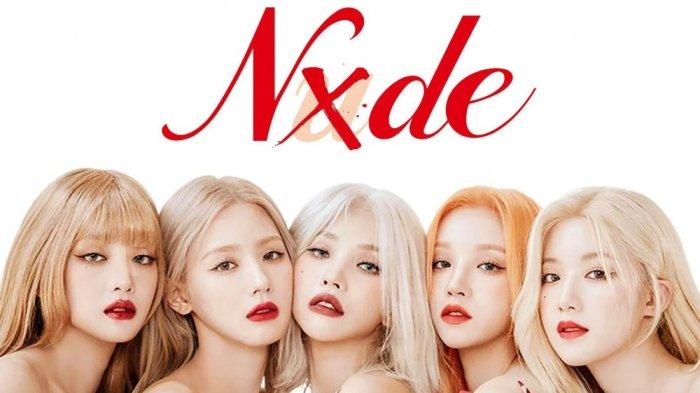

Unique song :

"Nxde" (pronounced "nude") is a song by South Korean girl group (G)I-dle.
It was released through Cube Entertainment on October 17, 2022, as the lead single of the group's fifth extended play, I Love (2022).
It was written, composed, and arranged by Soyeon with additional composition and arrangement credits by PopTime and Kakao.
Recent Song :
"Super Lady" is a song recorded by South Korean girl group (G)I-dle for their second studio album 2. It was released as the album's lead single by Cube Entertainment on January 29, 2024. An EDM track driven by military drums, chants and "a strong bass", was written and produced by group member Soyeon with additional writing credits from Pop Time, Daily and Likey. Its lyrics discuss themes of female empowerment, confidence and strength.